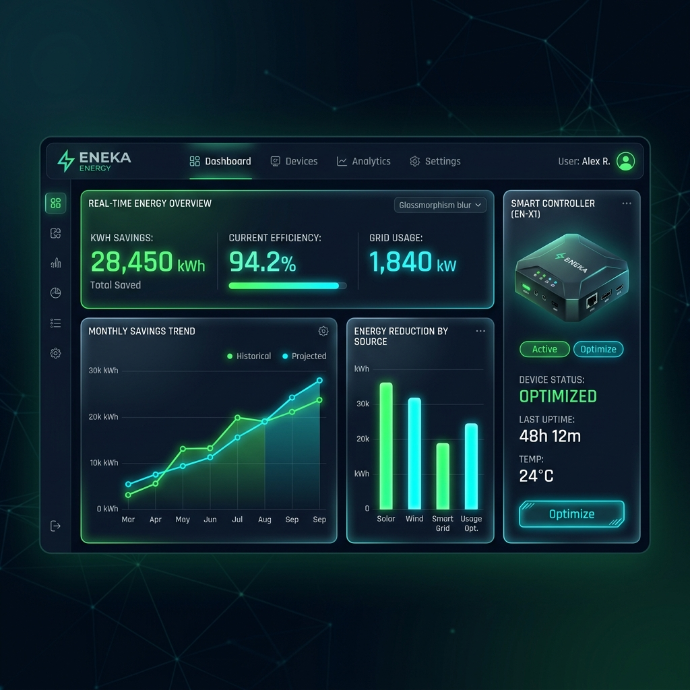

既存の空調設備の上位にインバータとシーケンサ（PLC）を後付け。 温度差に基づき稼働周波数を制御し、理論上最大87.5%（消費電力1/8）のポテンシャルを引き出します。実測平均でも最大60%の省エネ効果と快適性を両立します。
平均39.4%の消費電力で実測
単なる省エネ装置に留まらない、実用性と信頼性を徹底追求した設計。
ファンの回転数（周波数）を下げると、消費電力は3乗に比例して激減します。実測検証でも圧倒的な効果が証明されています。
給気温度と還気温度の温度差をセンシングし、温度変化に連動して周波数を調整するため、室内の快適性は常に保たれます。
インバータ等の故障時には、手動切替スイッチにより即座に商用電源（60Hz直結運転）へ切り替え可能。空調停止リスクをゼロにします。
Modbus通信による電力モニターと連携し、10秒毎にデータを収集。PLCのSDカード経由でCSVロギングし、将来のデータ解析を支援します。
現場の要件に応じて、HMI（操作画面）から簡単に切り替えることが可能です。
PLC内蔵のPIDアルゴリズムを使用。還気と給気の温度差をもとに、インバータ設定周波数を30Hzから45Hzの間で極めて滑らかに制御します。微分（D）動作は環境特性を考慮して0に設定し、オーバーシュートのない安定したPI制御を行います。
稼働条件に合わせて、削減可能な金額やCO2量を概算シミュレーションできます。
※導入前の全速運転(60Hz)と比較した推定削減額
【計算根拠】全速運転時の負荷率を85%と仮定。実測データに基づく周波数配分（30Hz: 40%の時間、45Hz: 60%の時間）から算出した平均削減率60.6%を用いています。
4,934 kWh
2.2 トン
9.7 年
試作検証条件（0.2kWシロッコファン、1.5kWインバータ使用）での実測入力電力データ。
検証により、インバータ設定周波数が低下するにつれ、入力電力が劇的に減少することが確認されました。 一般にファンの電力は回転数の3乗に比例するため、30Hz運転時は60Hz運転時の約20%の電力で稼働します。
| 運転周波数 | 入力電力 | 対60Hz電力比 | 削減率 |
|---|---|---|---|
| 60 Hz (全速運転) | 630 W | 100.0% | 0% (基準) |
| 45 Hz (上限設定) | 330 W | 52.4% | 47.6% 削減 |
| 30 Hz (下限設定) | 130 W | 20.6% | 79.4% 削減 |
※30Hz時間を40%、45Hz時間を60%として換算した平均消費電力比は39.4%（削減率60.6%）となり、目標値（最大60%削減）をクリアできる見込みです。

【データ解析画面イメージ】 24時間/月間の電力量・周波数データをグラフで遠隔視覚化
| 機器・機能 | 採用モデル | 備考 / インターフェース |
|---|---|---|
| 制御コントローラ (PLC) | 三菱電機 FX5U-32MR/ES | プログラム制御・データロギングの中核 |
| 操作表示器 (HMI) | 三菱電機 GT2104-RTBD | 4.3型タッチパネル、運転パラメータ設定用 |
| インバータ | 三菱電機 FR-A820 シリーズ | ファンモータの周波数（回転数）制御用 |
| 電力モニター | OMRON KM-N シリーズ 等 | Modbus RTU (RS-485) 通信、10秒毎計測 |
| 温度センサー | 白金測温抵抗体 (Pt100Ω) | 給気温度・還気温度（および外気温）用 |
| 温度入力カード | 三菱電機 FX5-4ADP | 白金測温抵抗体用アナログアダプタ |
万が一、インバータやPLCの故障等で省電力制御盤が停止した場合でも、盤面の切替スイッチを操作することで、即座に従来の「商用電源（60Hz直結）」による全速運転へと切り替え、空調の完全停止を防ぎます。
盤面の「商用ー切ーインバータ」切替スイッチを「切」に回し、アーク放電防止のため2〜3秒間保持します。
スイッチを「商用」側に投入します。これにより、インバータをバイパスしてモータが商用電源で再起動します。
導入検討時に多くいただく疑問や、技術的な懸念に論理的にお答えします。
既存設備への適合性調査、モータ容量に応じた詳細シミュレーションなど、お気軽にお問い合わせください。
担当窓口：ソリューション事業部（守瀬・野口・中村）